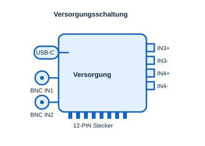

Die Versorgungsschaltung stellt den angeschlossenen Übungsschaltungen definierte positive und negative Spannungen bereit und erlaubt das Einspeisen von Signalen für die Übungen.

Versorgungsoptionen
Spannungsversorgung über USB-C
- Die Anschlüsse +PWR und -PWR benötigen separate Powerbanks oder USB-PD-fähige Netzteile.
- Mindestanforderung: Unterstützung von 12 V.
- Bei 5-V-Betrieb ergibt sich eine Ausgangsspannung von etwa 4,5 – 4,8 V.
- Spannungsauswahl: 5 V oder 10 V über einen Schiebeschalter.
- Hinweis: Denselben Spannungswert verwenden, um ein Offset-Massepotential zu vermeiden.
- Die negative Versorgung (-PWR) ist optional und nur für Schaltungen erforderlich, die sie benötigen.
BNC-Eingänge für Funktionsgenerator
- Anschlüsse: IN1 und IN2.
- Zweck: Signaleinspeisung über BNC-Koaxialkabel.
Klemmen für weitere Signaleingänge
- Anschlüsse: IN3+, IN3-, IN4+, IN4-.
- IN3- und IN4- müssen mit der Masse der Signalquelle verbunden werden.
Wichtiger Hinweis
Bei Verwendung von Labornetzgeräten die Strombegrenzung auf maximal 200 mA einstellen.
Berechnung: Ohmsches Gesetz & Leistung
Aus der angelegten Spannung U und einer ohmschen Last R lassen sich Strom und Leistung berechnen:
I = UR P = U · I
Rechner: Strom & Leistung
Strom I
–
Leistung P
–
Technische Hinweise
PIN-Belegung
| PIN | Ausgangssignal | Gespeist von |
|---|---|---|
| 1 | GND | PWR- |
| 2 | VCC- | — |
| 3 | OUT4- | IN4- |
| 4 | OUT4+ | IN4+ |
| 5 | OUT4- | IN3- |
| 6 | OUT4+ | IN3+ |
| 7 | OUT4- | IN2 |
| 8 | OUT4+ | — |
| 9 | OUT4- | IN1 |
| 10 | OUT4+ | — |
| 11 | VCC | PWR+ |
| 12 | GND | — |